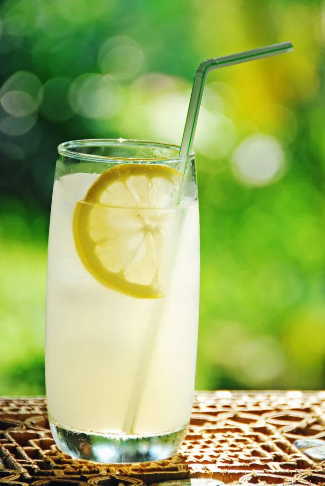

Lemmonade

Description
This taty lemmon water is the best thing that you can make on a tosty summer day.
Ingreadients
Directions
- Start by firmly rolling the lemons around on the counter.
This will help release the juices and make your job a lot easier.
Cut the lemon in half lengthwise, then squeeze out the juice by hand or with a juicer.
Make sure to juice the lemons over a large measuring cup so you can see exactly how much liquid you have.
- ombine sugar and water in a small saucepan, bring the mixture to a boil, and stir it until the sugar is dissolved.
- Pour cold water into a pitcher. Stir in lemon juice and pulp, then add simple syrup to taste.
- Serve over ice. If you're feeling fancy,